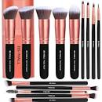
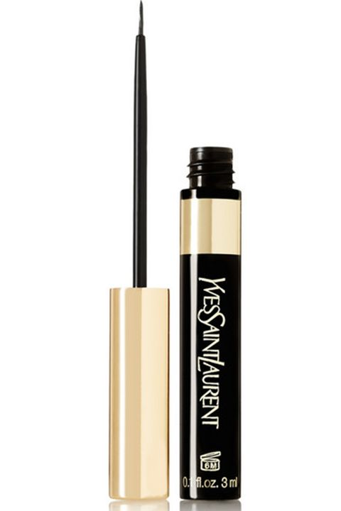
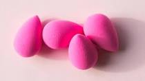
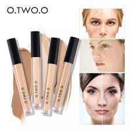

BACK
EASY BEAUTY BUY NOW!!
 FACIAL CLEANSER
FACIAL CLEANSER
skincare product used to remove make-up, dead skin cells, oil, dirt, and other types of pollutants from the skin, helping to keep pores clear and prevent skin conditions such as acne.
Php 109

BRUSH
Php 89
A tool with bristles, used for the application of makeup or face painting.

EYELINER
Php 150
Products that apply color to the area around the eyes to accent and highlight appearance of the eyes.
description for eyeliner

SPONGE
Php 99
a soft tool you can use to apply liquid and cream makeup products. Makeup sponges can be made of many different materials, so it's important to make sure the one you choose is free from common skin irritating ingredients, like latex.
 LIP GLOSS
LIP GLOSS
Php 110
a cosmetic product used to add shine and a small amount of color to the lips. It may be in liquid form or an easy-to-apply solid. Glosses are typically shiny, but they can also have a glittery, opalescent, or metallic finish along with the shine.

CONCEALER
Php 299
a type of cosmetic that is used to mask imperfections on the skin. These imperfections can include dark circles under the eyes, blemishes, and hyperpigmentation.
 CREAM MAKEU
CREAM MAKEU
https://www.google.com/search?q=cream+makeup+palette+description&rlz=1C1GCEB_enPH1034PH1034&ei=JppgZJXTGcvU2roP5OKCuA4&ved=0ahUKEwiV_pLBsPT-AhVLqlYBHWSxAOcQ4dUDCA8&uact=5&oq=cream+makeup+palette+description&gs_lcp=Cgxnd3Mtd2l6LXNlcnAQAzIECAAQRzIECAAQRzIECAAQRzIECAAQRzIECAAQRzIECAAQRzIECAAQRzIECAAQRzoKCAAQRxDWBBCwA0oECEEYAEoFCEASATFQuBFYuBFgkiFoAnADeACAAQCIAQCSAQCYAQCgAQHIAQjAAQE&sclient=gws-wiz-serp#:~:text=Simply%20apply%20the%20product%20on%20either%20side%20of%20the%20darker%20shade%20and%20blend%20it%20well.%20Again%2C%20don%27t%20use%20too%20much%20product%20at%20once!%20Start%20with%20a%20little%20bit%20and%20only%20add%20more%20if%20you%20really%20need
 MAKEUP KIT
MAKEUP KIT
PHP 899
A makeup kit box is an answer to your prayers if you struggle to pick out various make-up products like a primer, foundation, mascara, lip colour, sealer, and other items that form part of a complete makeup regimen or a professional makeup kit.